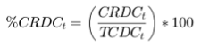
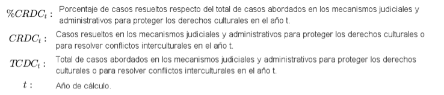

CjR01 - Casos resueltos respecto del total de casos abordados en los mecanismos judiciales y administrativos para proteger los derechos culturales
| Definición | Casos resueltos respecto del total de casos abordados en los mecanismos judiciales y administrativos para proteger los derechos culturales o para resolver conflictos interculturales. |
| Fórmula |  |
| Elementos del cálculo |  |
| Fuente de la fórmula | Fórmula descriptiva elaborada por el PUDH. |
| Estado de Validación de la fórmula | En datos.gob.mx |
| Unidad de Medida | Porcentaje |
| Referencia | Cifras de la Dirección General de Estadística del Consejo de la Judicatura Federal. |
Descargar datoss
Nombre del indicicador
Descripción del indicador
Instrucción responsable de la información
Formatos
Indicador CjR01
Casos resueltos respecto del total de casos abordados en los mecanismos judiciales y administrativos para proteger los derechos culturales
Consejo de la Judicatura Federal